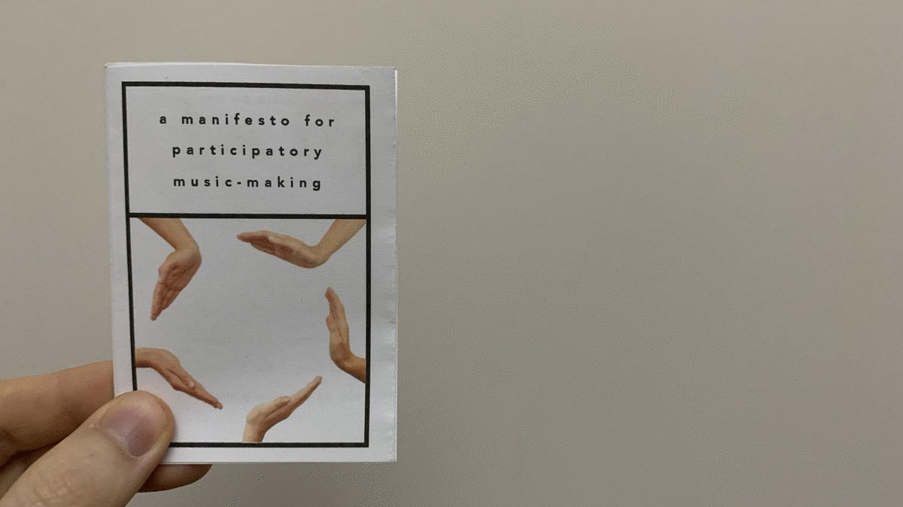

this is the place i write about projects i do,
archive stuff, and keep track of things.
archive stuff, and keep track of things.
Back to Blog | Gary-Martin
A Manifesto for Participatory Music-Making |
|---|
|
As a step towards the public facing project I have decided to create a manifesto for participatory music-making. This lays down my thoughts around the exclusivety and barriers to making music without having to dedicate to learn an instrument. The first draft of the manifesto will be published as a liited run of zines, until I can dedicate some time to refine them based on audience feedback. The manifesto is inspired by the Shit! I can DJ manifesto but broadens the practice from DJing to music-making in general. I am aware I need to focus this, or at least work on the terminology. Maybe this will be part of the language I develop around music-making tools.  |